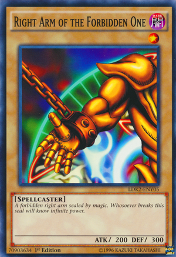
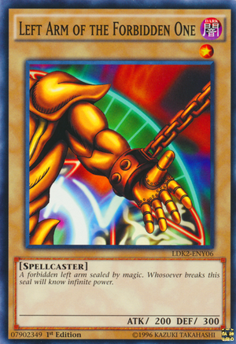
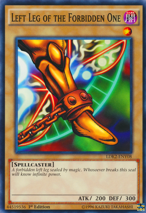

Archiving Pipelines

set_pipeline step
set_pipeline (cont'd)Pipelines can be configured by using a new set_pipeline step in a build plan:
plan:
- get: ci
- set_pipeline: concourse
file: ci/pipelines/concourse.yml
The pipeline will be set within the team running the build.
With this we can deprecate the concourse-pipeline resource.
across step
across step (cont'd)An across step runs a given step across all versions of a resource:
across: concourse-branch
do:
- set_pipeline: branch
var_files:
branch_name: concourse-branch/name
Pipelines can be archived when they are no longer needed.
When archived, a pipeline becomes completely inactive, and its name can be used for later pipelines. This is basically a soft-delete.
$ fly archive-pipeline -p pipeline-name
This is a pretty simple feature on its own, but it's also a precursor to "instanced pipelines."

Pipeline templates can be "instantiated" with vars that become part of the pipeline's identifier.
set_pipeline: release
instance_vars:
version: 5.3
A build sets all instances of a pipeline - any other instances that were not set by the build become auto-archived. (This will be important later.)
fly set-project (cont'd)A project is a resource containing config for tasks, resources, pipelines, and the project itself.
Projects are configured with fly set-project:
fly -t ci set-project \
--name booklit \
--type git \
--source uri=https://github.com/vito/booklit \
--path ci
Many projects may exist within a team.
Concourse will check for new versions of the project and load its config from a project.yml file.
It will then load up all tasks, resources, and pipelines defined within the project directory structure:
ci/project.yml
ci/tasks/test.yml
This allows pipelines to shrink down to just job definitions, removing hundreds of lines of YAML.
A minimal project configuration contains a name and a plan:
name: booklit
plan:
- task: test
The project's plan: will run every time a new version of the project is found. The build output will be visible in the UI.
The project's code will available to each build executed in the project under the project's name.
Projects, when combined with the set_pipeline step, allow your entire project to be automated and reproducible:
name: ci
plan:
- set_pipeline: concourse
- task: generate-template
- set_pipeline: fancy-templated-pipeline
file: generated-pipeline/foo.yml
- set_pipeline: release-5.2.x
pipeline: release # pipelines/release.yml
vars: # ...
Pipelines within a project change in a few ways:
Every job will automatically have the project resource available to its build plan, just like the project's own plan.
Pipelines will no longer list their own resource definitions. Instead, there will be project-wide resource definitions.
Pipelines will be able to reference each other's jobs via passed constraints. This is the missing piece for 'spaces'.
Projects define credential managers as var_sources:
name: ci
var_sources:
- type: vault
config: # ...
plan: # ...
The proximity to plan: makes it easy to audit credential access within the project.
name: booklit plan: - task: test
fly set-project -p booklit -t git \
-s uri=https://github.com/vito/booklit
This should feel intuitive for smaller projects which may not need a sophisticated pipeline system. Concourse has been described as 'overkill' for such use cases - hopefully this bridges the gap.
name: ci var_sources: - type: vault config: # ... plan: - set_pipeline: concourse - set_pipeline: prs
Though in this case it might make more sense for prs to be a separate project so it doesn't share the credential manager config. (Or maybe we could have pipelines associated to credential managers?)
name: ci
plan:
- set_pipeline: concourse
- across: branch
resource: release-branches
do:
set_pipeline: release
instance_fragment: branch
- across: branch
resource: feature-branches
do:
set_pipeline: branch
instance_fragment: branch
...Ok, the Exodia metaphor is a little broken.
With Exodia, each card on its own is completely worthless until you have all five.
The entire point of this roadmap is that each feature is useful independently.
A better metaphor would be "Blue Eyes White Dragon":
=
...but we have five features, not three.
And we all know how that turned out anyway.
Let's peel back the name for a second and see what 'spaces' really is:
Dynamically running pipelines across branches and PRs.
"Fanning in" across spaces - something that's impossible with pipelines.
Automatically cleaning up spaces which no longer exist.
...and let's see how these features accomplish those goals:
Dynamically running pipelines across branches and PRs: projects + across step + set_pipeline step.
"Fanning in" across spaces: projects enable cross-pipeline passed constraints.
Automatically cleaning up spaces which no longer exist: instanced pipelines become automatically archived.
Let's reflect on what this all means.
Projects accomplish a Travis/Circle CI -like workflow. For simpler projects this may be all you need.
At this point, the user will be introduced to resources, tasks, and build plans.
If and when they need to take the next step, then they can start using pipelines and adopt a "git ops" workflow.
By then, the only new concept is passed constraints.
Projects allow pipelines to reference each other in passed constraints.
This way users can configure independent pipelines for 'matrix' style workflows, i.e. testing across IaaSes.
The set_pipeline step allows for pipelines to be configured as part of a build plan.
Along the way, we can deprecate the concourse-pipeline resource, which has two smelly problems:
authenticating with Concourse
keeping fly in sync with your Concourse version
Pipeline instances allow for a common pipeline template to use some of its ((vars)) as part of the pipeline identifier.
This removes a lot of the need for 'hierarchical pipelines', which has been trotted around as an idea for a long time.
Pipeline instances should feel less complicated than arbitrary hierarchies (depth 2 is simpler than depth N).
The across step is the true 'root' of spatial automation. And because it just happens within a single build, it's a lot easier to reason about.
By composing the across step with the set_pipeline step, the mechanics of spatial pipelines should also be pretty easy to reason about.
For a long while now 'spaces' has been thought of as one big feature with a whole lot of implications.
By thinking about it as the intersection of five smaller features, our roadmap is heavily de-risked.